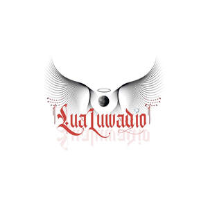

Trade Mark Journal No.2025/042 17 October 2025
UK00004276277 10 October 2025 (3,14,18,25,35)

- Class 3
- Cosmetics; Skincare cosmetics; Moisturisers [cosmetics]; Cosmetics and cosmetic preparations; Hair cosmetics; Skin fresheners [cosmetics]; Cosmetics for eye-lashes; Anti-aging moisturizers used as cosmetics; Cosmetics for suntanning; Organic cosmetics; Non-medicated cosmetics; Nail cosmetics; Lip cosmetics; Skin moisturizers used as cosmetics; Natural cosmetics; Cosmetics preparations; Mousses [cosmetics]; Make-up palettes containing cosmetics; Tanning gels [cosmetics]; Cosmetics in the form of lotions; Tanning oils [cosmetics]; Beauty care cosmetics; Facial creams [cosmetics]; Colour cosmetics; Self-tanning preparations [cosmetics]; Cosmetics for animals; Suncare lotions [for cosmetic use]; Tanning preparations [cosmetics]; Eyebrow cosmetics; Decorative cosmetics; Multifunctional cosmetics; Milks [cosmetics]; Eye cosmetics; Body creams [cosmetics]; After-sun oils [cosmetics]; Skin masks [cosmetics]; Tanning milks [cosmetics]; Cosmetics for eye-brows; Functional cosmetics; Suntan oils [cosmetics]; Facial gels [cosmetics]; Skin care cosmetics; Suntan lotion [cosmetics]; Cosmetics for children; Fluid creams [cosmetics]; Non-medicated cosmetics and toiletry preparations; Humectant preparations [cosmetics]; Emollient preparations [cosmetics]; Cosmetics in the form of creams; Powder compacts [cosmetics]; Sun-tanning preparations [cosmetics]; Cosmetic hair lotions; Colour cosmetics for the skin; Suntanning oil [cosmetics]; After-sun milks [cosmetics]; Cosmetics for use on the skin; After-sun milk [cosmetics]; Cosmetic moisturisers; Sunscreens [for cosmetic use]; Cosmetic creams and lotions; Bath powder [cosmetics]; Night creams [cosmetics]; Skin recovery creams [cosmetics]; Sun blocking lipsticks [cosmetics]; Body gels [cosmetics]; Cosmetics for the use on the hair; Cosmetic products in the form of aerosols for skincare; Body and facial creams [cosmetics]; Lip stains [cosmetics]; Sunscreen creams [for cosmetic use]; Sunscreen [for cosmetic use]; Creams (Cosmetic -); Cosmetic creams; Body care cosmetics; Cosmetic soaps; Cosmetics containing keratin; Cosmetic skin fresheners; Cosmetics in the form of powders; Hair care lotions [for cosmetic use]; Dyes (Cosmetic -); Cosmetic dyes; Cosmetics containing panthenol; After-sun lotions [for cosmetic use]; Beauty lotions; Cosmetics in the form of oils; Cosmetic facial lotions; Facial lotions [cosmetic]; Cosmetic suntan lotions; Nail paint [cosmetics]; Perfume oils for the manufacture of cosmetic preparations; Colour cosmetics for children; Skin care lotions [cosmetic]; Nail hardeners [cosmetics]; Tissues impregnated with cosmetics; Anti-aging creams [for cosmetic use]; Nail tips [cosmetics]; Cosmetic products for the shower; Sun protecting creams [cosmetics]; Nail primer [cosmetics]; Skin cleansers [cosmetic]; Anti-ageing creams [for cosmetic use]; Smoothing emulsions [cosmetics]; Perfumed powders [for cosmetic use]; Liners [cosmetics] for the eyes; Skin creams [cosmetic]; Moisturising skin lotions [cosmetic]; Cosmetic creams for the skin; Skin creams [for cosmetic use]; Body and facial gels [cosmetics].
- Class 14
- Jewellery; Necklaces [jewellery]; Brooches [jewellery]; Jewellery brooches; Jewellery, including imitation jewellery and plastic jewellery; Pendants [jewellery]; Bracelets [jewellery]; Brooches [jewellery, jewelry (Am.)]; Ornaments [jewellery]; Amulets being jewellery; Amulets [jewellery]; Pearls [jewellery]; Trinkets [jewellery]; Necklaces [jewellery, jewelry (Am.)]; Fashion jewellery; Jewelry; Gold jewellery; Lockets [jewellery]; Brooches [jewelry]; Jewelry brooches; Brooches being jewelry; Jade [jewellery]; Clasps for jewellery; Charms [jewellery]; Charms for jewellery; Jewellery charms; Enamelled jewellery; Pearls [jewellery, jewelry (Am.)]; Ornaments [jewellery, jewelry (Am.)]; Items of jewellery; Jewellery items; Costume jewellery; Decorative brooches [jewellery]; Trinkets [jewellery, jewelry (Am.)]; Rings being jewellery; Rings [jewellery]; Amulets [jewellery, jewelry (Am.)]; Pewter jewellery; Bracelets [jewellery, jewelry (Am.)]; Jewellery stones; Cloisonné jewellery [jewelry (Am.)]; Wristlets [jewellery]; Cloisonné jewellery; Cloisonne jewellery; Charms [jewellery, jewelry (Am.)]; Lockets [jewellery, jewelry (Am.)]; Chains [jewellery, jewelry (Am.)]; Rings [jewellery, jewelry (Am.)]; Jewellery products; Ivory [jewellery, jewelry (Am.)]; Shoe jewellery; Precious jewellery; Crucifixes as jewellery; Necklaces [jewelry]; Agate as jewellery; Pins [jewellery, jewelry (Am.)]; Jewellery chains; Chains [jewellery]; Ivory jewellery; Jewellery in semi-precious metals; Medallions [jewellery, jewelry (Am.)]; Jewellery chain; Jewellery caskets; Paste jewellery [costume jewelry (Am.)]; Paste jewellery [costume jewelry [Am.]]; Gold plated brooches [jewellery]; Pins [jewellery]; Pins being jewellery; Jewellery boxes; Amber pendants being jewellery; Jewellery for personal adornment; Pendants [jewelry]; Cabochons for making jewellery; Imitation jewellery; Jewellery chain of precious metal for necklaces; Body jewellery; Amberoid pendants being jewellery; Beads for making jewellery; Gold thread [jewellery, jewelry (Am.)]; Jewelry (Paste -) [costume jewelry]; Paste jewelry [costume jewelry]; Jewellery incorporating diamonds; Silver thread [jewellery, jewelry (Am.)]; Jewellery for pets; Fake jewellery; Personal jewellery; Jewellery in non-precious metals; Plastic costume jewellery; Imitation jewellery ornaments; Hat jewellery; Facial jewellery; Clips of silver [jewellery]; Jewellery findings; Crosses [jewellery]; Jewellery in the form of beads; Sterling silver jewellery; Bracelets [jewelry]; Jewellery incorporating pearls; Paste jewellery; Jewellery (Paste -); Pearls [jewelry]; Amulets [jewelry]; Jewellery made from gold; Jewellery articles; Articles of jewellery; Jewellery made from silver; Diamond jewelry; Jewellery chain of precious metal for anklets; Wire of precious metal [jewellery, jewelry (Am.)]; Jewellery containing gold; Jewellery chain of precious metal for bracelets; Lockets [jewelry]; Dress ornaments in the nature of jewellery; Jewellery in precious metals; Jewellery of precious metals; Clasps for jewelry; Jewelry stickpins; Threads of precious metal [jewellery, jewelry (Am.)]; Trinkets [jewelry]; Artificial jewellery; Jewellery for personal wear; Decorative pins [jewellery]; Jewellery fashioned from non-precious metals; Jewellery cases; Charms [jewelry]; Jewelry charms; Charms for jewelry; Jewellery rope chain for necklaces; Body costume jewellery; Jewellery fashioned of semi-precious stones.
- Class 18
- Pet clothing; Clothing for animals; Clothing for pets; Pets (Clothing for -); Bags for sports clothing.
- Class 25
- Clothing; Jackets [clothing]; Knitwear [clothing]; Ready-to-wear clothing; Woolen clothing; Furs [clothing]; Garments for protecting clothing; Layettes [clothing]; Clothing layettes; Linen clothing; Headbands [clothing]; Headbands for clothing; Gloves [clothing]; Gloves as clothing; Clothes; Aprons [clothing]; Maternity clothing; Kerchiefs [clothing]; Jerseys [clothing]; Denims [clothing]; Shorts [clothing]; Cashmere clothing; Capes (clothing); Oilskins [clothing]; Gabardines [clothing]; Leather clothing; Clothing of leather; Leather (Clothing of -); Silk clothing; Collars [clothing]; Parts of clothing, footwear and headgear; Knitted clothing; Veils [clothing]; Hoods [clothing]; Windproof clothing; Corsets [clothing, foundation garments]; Embroidered clothing; Wristbands [clothing]; Belts [clothing]; Bandeaux [clothing]; Belts for clothing; Rainproof clothing; Waterproof clothing; Casual clothing; Visors [clothing]; Jackets being sports clothing; Jackets (Stuff -) [clothing]; Stuff jackets [clothing]; Bottoms [clothing]; Playsuits [clothing]; Clothing for leisure wear; Ready-made clothing; Latex clothing; Woven clothing; Infant clothing; Trunks being clothing; Leisure clothing; Drawers [clothing]; Drawers as clothing; Clothing for sports; Sports clothing; Ties [clothing]; Athletic clothing; Clothing for children; Muffs [clothing]; Bodies [clothing]; Clothing for babies; Tops [clothing]; Clothing for infants; Clothing for cycling; Weatherproof clothing; Pockets for clothing; Fabric belts [clothing]; Triathlon clothing; Water-resistant clothing; Clothing for skiing; Handwarmers [clothing]; Beach clothing; Thermal clothing; Cowls [clothing]; Chaps (clothing); Men's clothing; Fishing clothing; Mitts [clothing]; Braces for clothing; Dance clothing.
- Class 35
- Retail services connected with the sale of clothing and clothing accessories.
Lua Andre